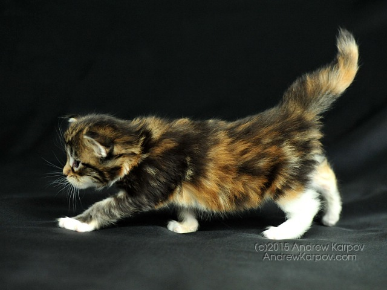

サイトマップ
問い合わせ先一覧
琉球大学へのアクセス
한국어
中文
English
日本語
入学希望者の皆さまへ
在学生・保護者の皆さまへ
卒業生の皆さまへ
企業・研究者の皆さまへ
社会人・地域の皆さまへ
大学情報
学部・院等
入試情報
教育・研究
国際・留学
社会連携
就職情報
研究室
学生生活

法文学部
観光産業科学部
教育学部
理学部
医学部
工学部
農学部
附属図書館
附属病院
キャンパスマップ
琉球大学同窓会
琉球大学後援財団
琉球大学生活共同組合
お知らせ
イベント
入試情報
更新情報
H27/9/30
「沖縄県と国立大学法人琉球大学との包括連携協定の締結について」
H27/9/30
「沖縄県と国立大学法人琉球大学との包括連携協定の締結について」
H27/9/30
「沖縄県と国立大学法人琉球大学との包括連携協定の締結について」
タブ2の内容
タブ3の内容
タブ4